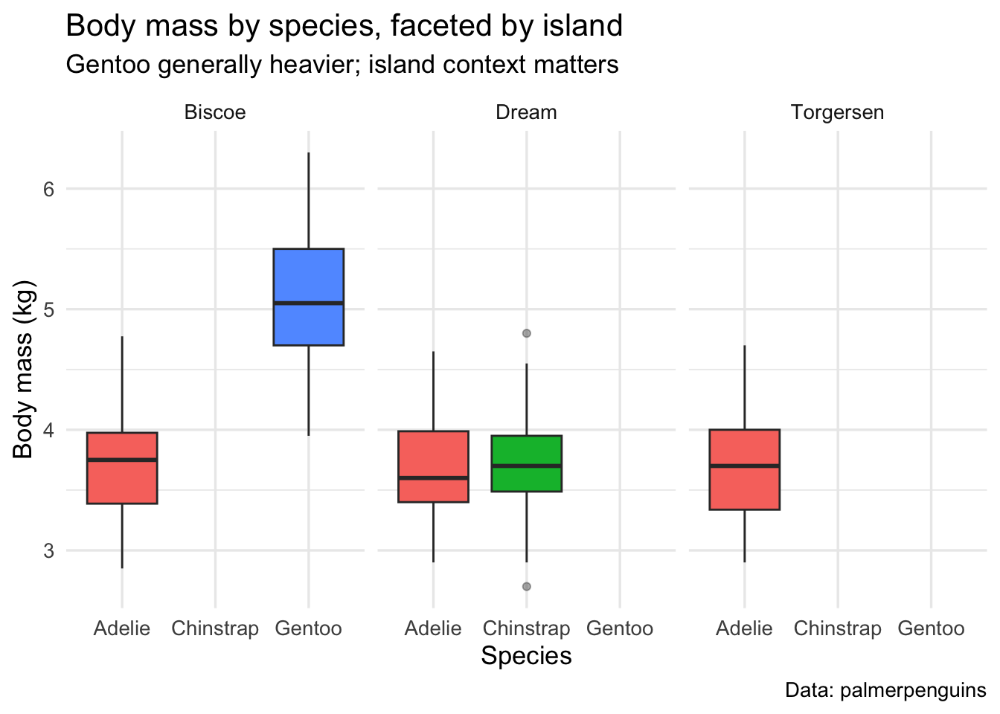

#| include: false
library(tidyverse)
library(palmerpenguins)
library(janitor)
library(lubridate)
library(gt)
theme_set(theme_minimal(base_size = 13))Example Analysis
Important
Question. How do species and island relate to body mass and bill measurements in penguins, and what patterns emerge across sex?
Intended audience. Public-health and ecology students learning tidy data analysis and visualization who want an approachable, fully reproducible example.
Margin note: The Palmer Archipelago hosts Adelie, Gentoo, and Chinstrap penguins—classic for tidyverse teaching.
Original data: The palmerpenguins R package provides cleaned measurements of penguins from the Palmer Archipelago, Antarctica [@horst2020palmerpenguins].
Where to get it: CRAN package palmerpenguins.
Data dictionary: https://allisonhorst.github.io/palmerpenguins/reference/penguins.html
Minimal Wrangling
peng <- penguins |>
janitor::clean_names() |> # clean_names() — janitor
tidyr::drop_na(species, island, sex, body_mass_g,
bill_length_mm, bill_depth_mm) |> # drop_na() — tidyr
dplyr::mutate(
body_mass_kg = body_mass_g / 1000, # mutate() — dplyr
species = forcats::fct_reorder(species, body_mass_kg, .fun = median)
) |>
dplyr::select(species, island, sex, bill_length_mm,
bill_depth_mm, body_mass_kg) |> # select() — dplyr
dplyr::arrange(species, island) # arrange() — dplyr
long_bills <- peng |>
tidyr::pivot_longer( # pivot_longer()— tidyr
c(bill_length_mm, bill_depth_mm),
names_to = "bill_metric",
values_to = "bill_value"
)Plot A-Scatter plot
ggplot(peng, aes(bill_length_mm, bill_depth_mm, color = species)) +
geom_point(alpha = 0.7) + # geom_point()
geom_smooth(se = FALSE, method = "loess") + # geom_smooth()
labs(
title = "Bill length vs. depth by species",
subtitle = "Distinct morphologies separate species in bill space",
x = "Bill length (mm)",
y = "Bill depth (mm)",
caption = "Data: palmerpenguins"
)
Plot B- Boxplot (Faceted)
ggplot(peng, aes(species, body_mass_kg, fill = species)) +
geom_boxplot(outlier.alpha = 0.4) + # geom_boxplot()
facet_wrap(~ island) + # faceting requirement
labs(
title = "Body mass by species, faceted by island",
subtitle = "Gentoo generally heavier; island context matters",
x = "Species",
y = "Body mass (kg)",
caption = "Data: palmerpenguins"
) +
theme(legend.position = "none")
Plot c -Histogram
ggplot(peng, aes(body_mass_kg)) +
geom_histogram(bins = 25) + # geom_histogram()
labs(
title = "Distribution of penguin body mass",
subtitle = "Right-skew with a heavier tail among Gentoo",
x = "Body mass (kg)",
y = "Count",
caption = "Data: palmerpenguins"
)
External image

Summary Table.
summary_tbl <- peng |>
dplyr::group_by(species, sex) |> # group_by()
dplyr::summarise(
n = dplyr::n(),
mean_mass = mean(body_mass_kg),
sd_mass = sd(body_mass_kg),
.groups = "drop"
) |>
dplyr::arrange(species, sex)
summary_tbl |>
gt() |>
tab_header(title = "Body mass summary by species and sex") |>
fmt_number(columns = c(mean_mass, sd_mass), decimals = 2)| Body mass summary by species and sex | ||||
| species | sex | n | mean_mass | sd_mass |
|---|---|---|---|---|
| Adelie | female | 73 | 3.37 | 0.27 |
| Adelie | male | 73 | 4.04 | 0.35 |
| Chinstrap | female | 34 | 3.53 | 0.29 |
| Chinstrap | male | 34 | 3.94 | 0.36 |
| Gentoo | female | 58 | 4.68 | 0.28 |
| Gentoo | male | 61 | 5.48 | 0.31 |
Warning
Method note. We removed rows with missing key fields for clarity in visualization. Different imputation choices could be justified for modeling.
Note
Interpretation tip. Species differ strongly in body mass and bill metrics; island strata may mediate distributions.
Summary
The dataset shows clear morphological separation among species, with Gentoo typically heavier and with longer bills than Adelie and Chinstrap. Faceting by island suggests context matters: distributions shift by location, hinting at ecological or sampling differences. Sex also contributes to variance in mass, consistent with mild sexual dimorphism. Together, these patterns are easy to communicate with tidy wrangling and layered graphics.
Function checklist
dplyr: mutate, select, arrange, group_by, summarise, n
tidyr: drop_na, pivot_longer
ggplot2: geom_point, geom_smooth, geom_boxplot, geom_histogram, facet_wrap, plus labs, theme
Citations
We used palmerpenguins [@horst2020palmerpenguins], tidy data manipulation [@wickham2014dplyr], and grammar of graphics [@wickham2016ggplot2].
References
Horst, Allison Marie, Alison Presmanes Hill, and Kristen Brandon Gorman. 2020. “Palmerpenguins: Palmer Archipelago (Antarctica) Penguin Data.” https://allisonhorst.github.io/palmerpenguins/.
Wickham, Hadley. 2016. Ggplot2: Elegant Graphics for Data Analysis. 2nd ed. Springer.
Wickham, Hadley, Romain Francois, Lionel Henry, and Kirill Mueller. 2014. “Dplyr: A Grammar of Data Manipulation.” R Package Version 0.1. https://CRAN.R-project.org/package=dplyr.